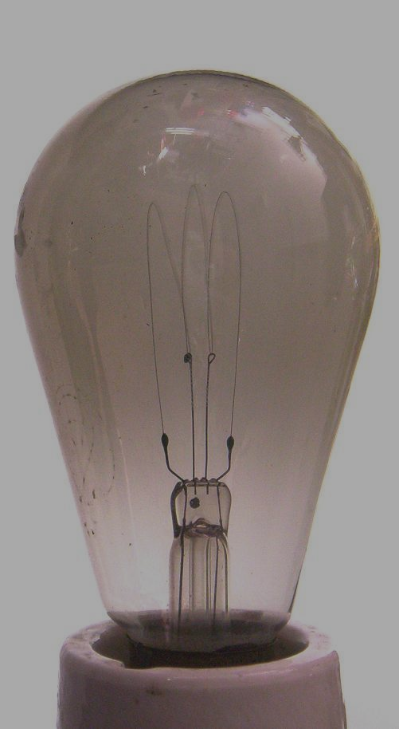

<html>
  <title> Lampe à incandescence </title>
  <style>
    h1{
        color:royalblue;
    }
    span.evidence{
        color:royalblue;
        font-style:italic;
    }
    img{
        float:right;        
    }
    body{
        background-color:black;
        color:white;
    }
  </style>
</html>
<body>
  <nav>
    <form>
        <input type="button" value="Allumee" id="boutonA">
        <input type="button" value="Eteinte" id="boutonE">
      </form>
  </nav>
  <h1> La lampe à incandescence </h1>
  <section>
    
    <p>
      Une lampe à <span class="evidence"> incandescence </span>, ou <span class="evidence">ampoule à incandescence</span> par métonymie, est un luminaire électrique qui éclaire en portant à incandescence par effet Joule un filament de tungstène, le métal qui a le plus haut point de fusion (3 422 °C).
    </p>
    <p>
      Expérimentée au milieu du XIXe siècle, la <span class="evidence">lampe à incandescence</span>, perfectionnée au cours du XXe siècle, est devenue au cours de ce siècle la principale source d'éclairage. Au XXIe siècle, elle est progressivement remplacée en raison de sa mauvaise efficacité lumineuse.
    </p>
    <p>
      Le filament de carbone sous vide des débuts a disparu après la mise au point du filament de tungstène sous gaz noble. Ce procédé, dit <q> classique </q>, s'est maintenu après l'invention de la <q> <span class="evidence"> lampe à incandescence halogène </span> </q>, plus chère, dont le gaz régénère le filament lorsqu'il se sublime sous l'effet d'une température élevée.
    </p>
    <p>
      Les lampes classiques durent d'autant plus longtemps qu'elles éclairent moins bien. Les industriels fabricants se sont entendus pour produire des lampes d'une durée moyenne de fonctionnement de 1 000 heures. Cet accord entre les membres du cartel Phœbus, a suscité des soupçons d'une entente illicite, destinée à conforter les profits de l'industrie plutôt qu'à permettre la comparaison entre les produits. </p>
  </section>
  <footer>
    Texte tiré de wikipédia.org
    <footer>
  
</body>
